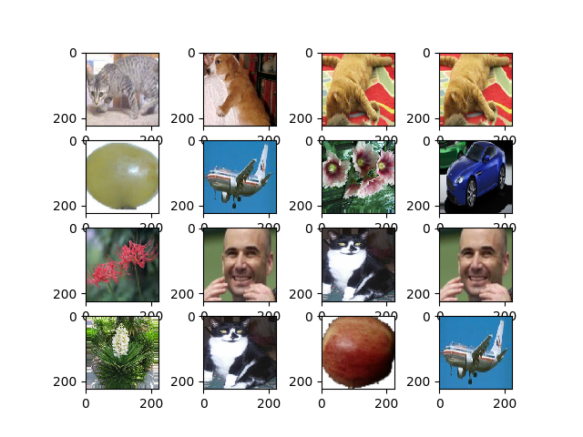

Sign Detection
Started 1/28/2020
Keras Demo
Pyenv
As of now, Tensorflow requires python 3.7, and the current python
version is 3.8. To provide python 3.7 to this project only, I used
pyenv (https://github.com/pyenv/pyenv). Since I'm using Arch
Linux, I used pacman to install pyenv, sudo pacman -S
pyenv. Then I added the following lines to my bash_profile:
export PYENV_ROOT="$HOME/.pyenv" export PATH="$PYENV_ROOT/bin:$PATH" if command -v pyenv 1>/dev/null 2>&1; then eval "$(pyenv init -)" fi
Then I restarted my shell and went to my project directory and ran
pyenv local 3.7.6. Finally, to install python 3.7.6: pyenv install 3.7.6.
In this directory I installed packages, via pip, for this
version. For example, sudo pip install matplotlib. Refer to the
github link above for more information.
Emacs Pyenv Mode
Emacs has the pyenv-mode-auto package which, when installed,
will automatically detect the project's python version (via the
.python-version file generated with pyenv local 3.7.6
above). This means that we can run org-mode python code blocks
will use the python version detected, instead of the system python
version (which is currently python 3.8).
Data Preperation
Downloading Images from AWS S3 Bucket
if [[ ! -d "images" ]]; then wget https://s3.us-east-2.amazonaws.com/naturalimages02/images.tar.gz tar -xzf images.tar.gz rm -f images.tar.gz* fi; echo "DONE!"
Common Variables
common.py
trainPath = '../images/train/' testPath = '../images/test/' classCount = 8 imageSize = 224
Preparing Training Data
batch.py
from keras.preprocessing.image import ImageDataGenerator import numpy as np import common size = 16 trainingBatchGenerator = ImageDataGenerator( validation_split = 0.3, shear_range = 0.2, zoom_range = 0.2, horizontal_flip = True) trainingBatchIterator = trainingBatchGenerator.flow_from_directory( directory = common.trainPath, target_size = (common.imageSize, common.imageSize), batch_size = size, class_mode = 'categorical', color_mode = 'rgb', shuffle = True) x, y = trainingBatchIterator.next() sampleSize = trainingBatchIterator.n
Let's See the Batch
import matplotlib.pyplot as pyplot import numpy import batch figure = pyplot.figure() columns = 4 rows = 4 for i in range(1, columns*rows+1): randomImageIndex = numpy.random.randint(batch.size) randomImage = batch.x[randomImageIndex].astype(numpy.int) figure.add_subplot(rows, columns, i) pyplot.imshow(randomImage) pyplot.savefig(figureFile) return figureFile

Model Creation from VGG16
model.py
import keras from keras.models import Model, load_model from keras.layers import Activation, Dropout, Flatten, Dense from keras.preprocessing.image import ImageDataGenerator from keras.applications.vgg16 import VGG16 import common baseModel = VGG16( weights = 'imagenet', include_top = False, input_shape = (common.imageSize, common.imageSize, 3)) for layer in baseModel.layers: layer.trainable = False model = keras.models.Sequential() model.add(baseModel) model.add(Flatten()) model.add(Dense(1024, activation='relu')) model.add(Dense(1024, activation='relu')) model.add(Dense(common.classCount, activation='softmax')) if __name__ == '__main__': print(model.summary())
Model: "sequential_1"
_________________________________________________________________
Layer (type) Output Shape Param #
=================================================================
vgg16 (Model) (None, 7, 7, 512) 14714688
_________________________________________________________________
flatten_1 (Flatten) (None, 25088) 0
_________________________________________________________________
dense_1 (Dense) (None, 1024) 25691136
_________________________________________________________________
dense_2 (Dense) (None, 1024) 1049600
_________________________________________________________________
dense_3 (Dense) (None, 8) 8200
=================================================================
Total params: 41,463,624
Trainable params: 26,748,936
Non-trainable params: 14,714,688
_________________________________________________________________
None
Training
training.py
from keras.optimizers import SGD import batch from model import model model.compile( loss = 'categorical_crossentropy', optimizer = SGD(lr=1e-3), metrics = ['accuracy']) # # Start the training process # model.fit(x_train, y_train, validation_split=0.30, size=32, epochs=50, verbose=2) # # #save the model # model.save('catdog.h5') history = model.fit_generator( batch.trainingBatchIterator, steps_per_epoch = batch.sampleSize/batch.size, epochs = 10) model.save('fine_tune.h5')
723bc9aae56987359e8608626ea62441
Summarize History
import matplotlib.pyplot as pyplot import training pyplot.plot(training.history.history['loss']) pyplot.title('loss') pyplot.ylabel('loss') pyplot.xlabel('epoch') pyplot.legend(['loss'], loc='upper left') pyplot.show()